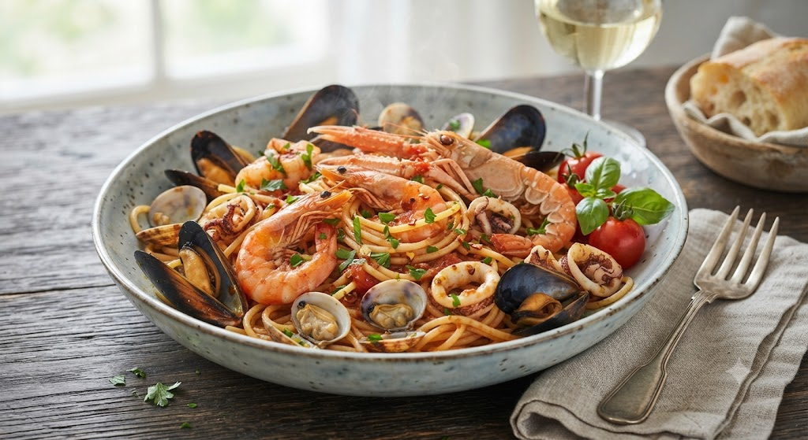
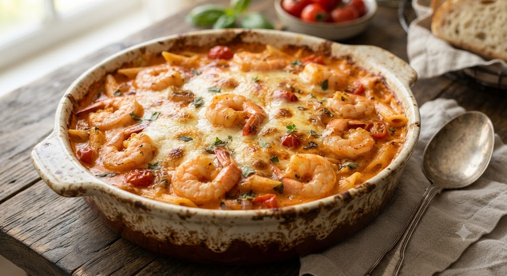
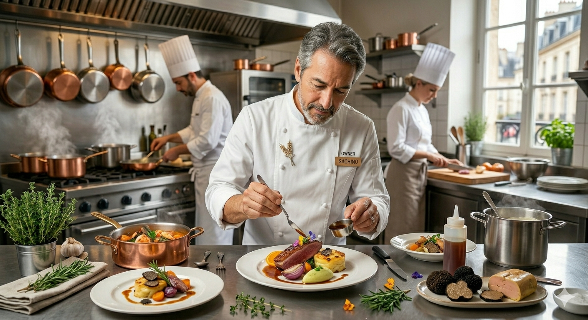
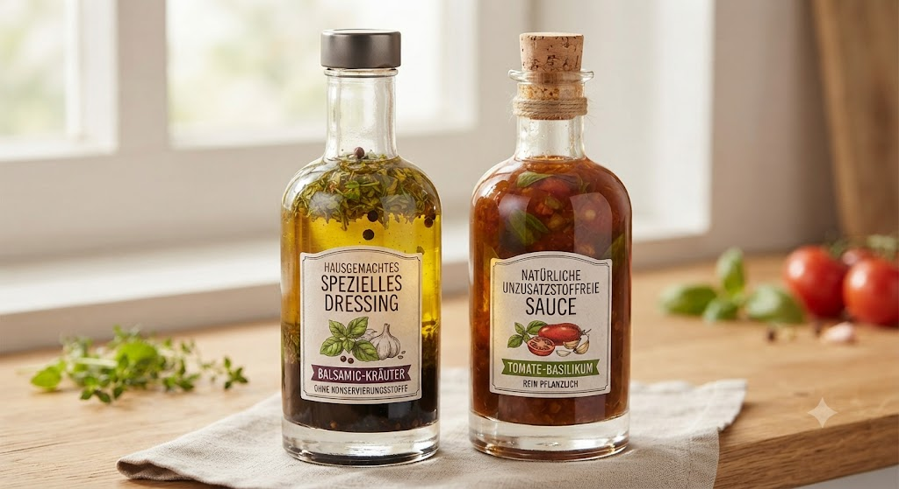

仙台クリスロードの地下に広がる、
本格イタリアンの聖域。

ランチで不動の人気を誇る『盛り合わせランチ』。ガーリックが香いた絶品ソースに絡む海老と、旬の野菜がふんだんに入った彩々のグラタン。手作りドレッシングのサラダを添えれば、それはもう至福のひと時。


1981年の創業以来, 守り続けてきたのは「料理を通じた縁」です。
東日本大震災の際、大川原は真っ先に炊き出しを行いました。食材も電気も限られた中、温かい料理を口にした方々の笑顔が、今の私たちの原動力になっています。
「味が変わらない」「ここに来ると安心する」そんなお言葉をいただくために、今日も朝から無添加のソースを仕込み、丁寧にグラタンを焼き上げます。
親子三代で通える、仙台のふるさとのような場所でありたい。
「5月6日に家族3人で。仙台に行くと必ず伺う大好きなイタリアンです。特にグラタンが絶品！」
—— リピーターのA様
「盛り合わせランチが1,350円で食べられるのは幸せ以外何ものでもありません。待ってでも食べるべき。」
—— 仕事で仙台にお越しのB様

チロル特製ドレッシング＆無添加ソース定期便
「チロルのドレッシングを毎日サラダにかけたい」「あの味が恋しいけれど遠くて通えない」
そんな熱いご要望にお応えし、出来たてを急速冷凍・配送するサブスクリプションを現在開発中です。
一本ずつ店舗の厨房で手作り、完全無添加にこだわるため、まずは【月先着100名様・会員限定】でのスタートを予定しております。販売開始や先行予約のアナウンスは、公式X（旧Twitter）にていち早くお届けします。
最新情報を公式Xで待つ →〒980-0021
宮城県仙台市青葉区中央2丁目6-6 多楽茶屋ビル B1階
022-222-8577
ランチ 11：30～15：45
ディナー 17：30～21：30
※休日は混雑が予想されます。事前予約を推奨します。地下への階段をお気をつけてお降りください。
アットホームな老舗イタリアンで、接客や調理を学んでみませんか？